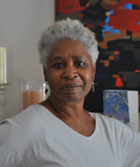

Gayle Bryant
Research Interviewer
E-mail: gbryant2@albany.edu
Specialization: Interviewing and Education
Projects:
Healthy Families NY Randomized Trial
Gayle Bryant joined CHSR in 2002 as a Interviewer for the Healthy Families New York Randomized Trial. She holds a degree in Business from Buffalo State College, and a minor in Design. Before becoming an interviewer with CHSR she worked for the Buffalo State Foundation Families United Project. As an interviewer in the randomized control trial she participated in the year Seven follow up and is currently working on the year 15 follow up. In the interim, she is a Substitute Teacher for the Buffalo Board of Education.